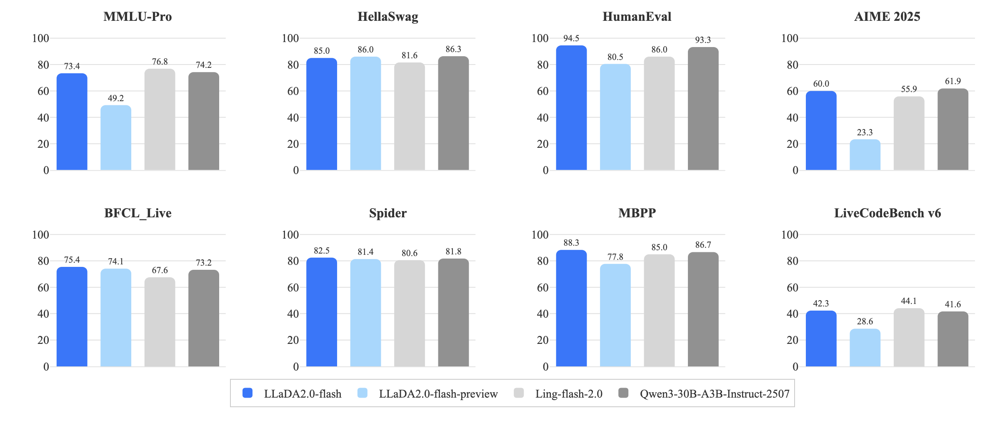
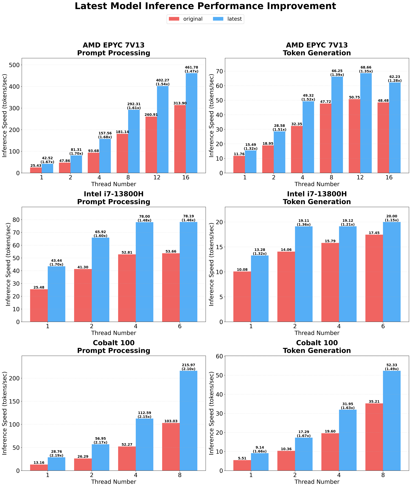

00全景与读法
推理效率的红利正在换轴。第一阶段(让每个 FLOP 更便宜)已基本进入存量,第二阶段(让计算与系统状态联合调度)正在发生,而下一个 10 倍来自第三阶段:让不必要的计算根本不发生——并行生成跳过串行等待、条件深度跳过简单 token、语义缓存跳过重复上下文、agent 感知调度跳过无效占用。本篇对一份六层地图逐格核实的总裁定是:方向判断基本准确,但时间戳普遍落后 6–12 个月,多数被标为"空白"的格子已在 2025 下半年至 2026 上半年被密集覆盖。
每一节固定三段:地图怎么标(左栏,灰,即原始地图的判断)/ 扫描核实到什么(右栏,橙)/ 本站判断(下方色块)。数字按来源分三类标注:第三方 独立评测或论文实测、自报 厂商或作者口径、推断 本站分析。倍数除注明"实测"外一律为 provisional。
贯穿全文的口径纪律:延迟倍数与吞吐倍数必须分开引用。并行生成在单流延迟口径下 5–10× 真实存在,在质量对齐 + 高 batch 吞吐口径下收缩到 1.5–2.5×——因为高 batch 下 GPU 本已算力饱和,并行去噪省的是串行轮次而不是总 FLOPs。
01两个锚点与三阶段框架
IndexShare 的机制本身并不复杂——DSA 的 lightning indexer 每 4 层复用一个,1M 上下文下索引器 FLOPs 降约 2.9×。但它的抽象意义在于:辅助计算(为主计算服务的计算)可以跨层摊销。索引器本身即是"为了少算注意力而额外付出的算力",IndexShare 将这笔开销本身也予以削减。这不是提升 GEMM 实现速度,而是"让一部分计算不必发生"。
DSpark 的意义类似但在另一个轴上。半自回归草稿 + 置信度调度验证,V4 线上对比生产基线 MTP-1 单用户提速 60–85%(arXiv:2607.05147)。关键词是"置信度调度":投机解码从"训一个更准的 drafter"的算法问题,升级为"draft 多长、何时验证、验证预算怎么分"的算法 × 调度联合问题。收益不再来自某个孤立组件更快,而来自算法决策与系统状态(负载、接受率历史、batch 构成)的耦合。

这张图怎么读
不要按层从上往下读,要按两个锚点到阶段链的路径读:A3(注意力演化)与 D3(投机 × 调度)分别虚线指向 N1(IndexShare)与 N2(DSpark),两个锚点再实线汇入 S2(阶段二)。这条路径的含义是:本篇的立论建立在两个已生产的具体系统上,而不是从趋势推演出来的。
再看底部 SKIP 子图的四条虚线入边:K1、K2 来自层一(架构),K3 来自层四与层六,K4 来自层五与层六。层六同时喂给两个跳过,是全图入度最高的层——这是"最大空白领域在 agent 联合优化"这一判断的图形表达。第 09 节会核实该判断的四个子项,结论是其中三项的"空白"已被填补。
最后注意每个 subgraph 内节点上已经带着裁定结论(如"推理期早退遇冷"、"ROSE 为首个公开工作,窗口未关"、"级联+验证器仲裁——精确空白"),因此这张图不是原始地图,而是核实后的地图。
地图怎么标
推理效率的下一波来自继续压低单位算力成本:更低比特、更稀疏的模型、更快的 kernel。
扫描核实到什么
第三方 两个已生产的锚点显示收益来源已经改变:IndexShare 削减的是辅助计算(1M 上下文下索引器 FLOPs 降约 2.9×),DSpark 的收益来自算法与系统状态的耦合(V4 线上对比生产基线 MTP-1 单用户提速 60–85%)。推断 阶段一的大颗粒红利已基本进入存量。
本站判断三阶段框架最有价值之处是它把"倍数从哪来"这个问题结构化了:阶段一的倍数来自硬件与格式,阶段二来自调度,阶段三来自负载形状。这也预告了第 10 节的结论——如果倍数来自负载形状,那么它就不是普适的,而是特定负载专属的。
02打破自回归串行:dLLM 的现状与终局裁定
地图的判断链是:dLLM(LLaDA/Mercury/Gemini Diffusion)→ semi-AR 是过渡态 → 终局是 block diffusion + AR 验证的混合,若接受率解决 = 5–10× 解码。扫描结果对这条链的裁定是:前提修正、中段反转、终局采纳且已提前兑现。
前提修正:dLLM 已远超实验室原型阶段。 2025-12 到 2026-06 三件事落地——蚂蚁 LLaDA 2.0 发布首个 100B 级 dLLM 权重(flash 100B-A1.4B MoE,arXiv:2512.15745 / GitHub);Inception Labs 的 Mercury 2 成为首个推理型商用 dLLM(约 1000 tok/s @ Blackwell,官方博客,2025-11 获 5,000 万美元种子轮);Google 放弃让 Gemini Diffusion GA(waitlist 持续 14 个月未开放,产品页),改以开源形式放出 DiffusionGemma(26B-A4B,256-token 块并行,约 4× 提速)。

这张图怎么读
要读的是深蓝(扩散)与深灰(自回归)之间的差值方向是否一致。代码与工具类面板上扩散侧领先:HumanEval 94.5 对 93.3、MBPP 88.3 对 86.7、BFCL_Live 75.4 对 73.2、Spider 82.5 对 81.8;而知识与推理类面板上落后:MMLU-Pro 73.4 对 74.2、AIME 2025 60.0 对 61.9、LiveCodeBench v6 42.3 对 41.6 基本持平、HellaSwag 85.0 对 86.3。这与原文记录的两点相互印证——代码域 dLLM pass@1 已反超同档 AR,而复杂推理与长程一致性仍是差距所在。
第二个值得看的位置是浅蓝(preview)与深蓝(正式版)的落差:MMLU-Pro 49.2 → 73.4、AIME 23.3 → 60.0、LiveCodeBench 28.6 → 42.3。同一架构在几个月内的工艺改进幅度,远大于扩散与自回归之间的架构差——这提示当前的质量差距主要是训练配方成熟度问题,而非范式上限问题。全部数字为作者自报,无独立复现;本图只覆盖质量,不含速度口径。
中段反转:semi-AR 不是过渡态,而是终点形态本身。 所有能落地的 dLLM——LLaDA 2.0、DiffusionGemma、Seed Diffusion(arXiv:2508.02193,2146 tok/s @ H20,比同规模 AR 快 5.4×)——内核全部收敛到 block diffusion(块间自回归、块内并行去噪),纯全序列掩码扩散事实上已被放弃。这条谱系从 BD3-LM(ICLR 2025 Oral)奠基,到 NVIDIA Fast-dLLM v2 证明只要约 1B token 微调就能把现成 AR 模型改造成 block-dLLM(arXiv:2509.26328)。该格若被判断为参与者稀少,需修正为已趋拥挤:BD3-LM、Fast-dLLM v2、SDAR(arXiv:2510.06303)、Seed Diffusion、LLaDA 2.0、DiffusionGemma 至少六支。
终局采纳:"block diffusion 并行草稿 + AR 验证退化为一致性检查"这个猜想不但成立,而且已经是 2026 上半年该层的实际生产赢家。DFlash(Z Lab)用轻量 block-diffusion drafter 一次前向出整块草稿,Qwen3-8B 上 >6× 无损加速、比 EAGLE-3 高至 2.5×,已进 SGLang 生态(arXiv:2602.06036 / LMSYS 博客);DSpark 本身就是这个形态的生产化版本,同时踩在 semi-AR 与投机解码两个格子上。该混合路线的关键优势在于:它将 dLLM 的并行草稿能力与 AR 的质量保证相结合,绕开了 dLLM 的质量差距问题(纯扩散在推理基准落后前沿 AR 约 10–20 分、混合路线缩到 5–7 分——此数来自二手汇总,仅供量级参考;硬数据是代码域 dLLM pass@1 已反超同档 AR,HumanEval 89.6 对 84.8,arXiv:2509.11252)。

这张图怎么读
图的核心信息在那条标注"能落地的版本全部收敛"的边:PURE(纯全序列 dLLM)指向 BLK(block diffusion)。它表示的不是技术演进,而是一次形态淘汰——纯扩散形态正被放弃,活下来的全部是块形态。这直接反转了"semi-AR 是过渡态"的原判断。
再看两条入终局的边:SEMI → END2 与 DFL → END2。两条路径起点不同(一条从自回归侧演化而来,一条从扩散侧演化而来),终点相同——这就是"两条线合流"的图形表达,而 DSpark 同时踩在两个格子上。
最值得注意的是三个虚线挂件,它们是全图的限定语:GAP1 说明无任何 dLLM 达到前沿 AR 质量;GAP2 是口径警告(单流延迟 5–10× 与质量对齐高 batch 吞吐不足 2× 必须分开引用);GAP3 指出混合路线的成本——每个新目标模型需重训 drafter,开放式长推理接受率仍低。第三条是这条路线兑现 5–10× 的最后闸门。
地图怎么标
dLLM 仍是实验室原型;semi-AR 是通向纯扩散的过渡态;终局的 block diffusion + AR 验证若解决接受率可得 5–10× 解码。
扫描核实到什么
自报 前提修正:LLaDA 2.0 首个 100B 级 dLLM 权重、Mercury 2 商用(约 1000 tok/s @ Blackwell)、DiffusionGemma 26B-A4B 约 4× 提速。第三方 中段反转:能落地的形态全部收敛到 block diffusion,纯全序列掩码扩散已被放弃,该格至少六支参与者(BD3-LM、Fast-dLLM v2、SDAR、Seed Diffusion、LLaDA 2.0、DiffusionGemma)。自报 终局已提前兑现:DFlash 在 Qwen3-8B 上 >6× 无损、比 EAGLE-3 高至 2.5×,已进 SGLang;DSpark 为生产化版本。
本站判断"5–10× 解码"的裁定是部分采纳,必须拆成两个口径引用:单流延迟口径下真实存在(Mercury 宣称 5–10×、Seed Diffusion 实测 5.4×、DFlash 无损 6×),质量对齐 + 高 batch 吞吐口径下收缩到 1.5–2.5×(Fast-dLLM v2 实测)。写作与引用时严禁把"延迟 5–10×"说成"吞吐 5–10×"(provisional:两个数都会随 drafter 蒸馏工艺继续移动)。
03打破逐层串行:深度稀疏的"诊断对、机制错"
地图判断:MoD / early exit / looped transformer 构成与 MoE 宽度稀疏正交的"深度稀疏",agent 轨迹大量格式化 token 不需要满深度,故尤其有价值。裁定:诊断采纳,机制修正。
"格式化 / 样板 token 便宜"这个前提有支撑——结构化输出因投机接受率高,投机解码提速常见约 3× 量级(provisional,社区经验数字,无单一出处)。但这块红利正在被投机解码和 semi-AR 以无损、免重训的方式消除,而不是被 MoD / early-exit 消除。MoD(arXiv:2404.02258)提出两年、LayerSkip(arXiv:2404.16710)进了 HuggingFace trl,但没有任何公开证据表明进入生产旗舰;2026-03 还出现了方向性负面结果:新一代预训练配方降低了层冗余,MoE/SSM 架构的 early-exit 空间比 dense 更小,早退收益随模型代际递减(arXiv:2603.23701)。更工程化的解释是:MoD 路由后 batch 不齐,与 KV cache / 批处理调度的冲突始终没有生产级解法——这可能是其未能进入旗舰的实际原因。
深度稀疏思想的有效载体是 looped / recursive 路线:从预训练起内建循环深度,而非推理期补丁。字节 Ouro LoopLM 以 7.7T token 完成完整预训练,1.4B/2.6B 持平 4–12B SOTA(arXiv:2510.25741 / 权重);Mixture-of-Recursions 把"深度稀疏 + 参数共享"合进一个框架(arXiv:2507.10524);加上 Huginn(arXiv:2502.05171)和 LoopFormer(arXiv:2602.11451),这是该子层唯一上行的研究期权。
地图怎么标
深度稀疏与 MoE 的宽度稀疏正交,agent 轨迹里大量格式化 token 不需要满深度计算,是尚未被开采的大颗粒。
扫描核实到什么
第三方 诊断成立但机制被替代:投机解码与 semi-AR 以无损、免重训的方式吃掉了同一块红利;MoD 提出两年、LayerSkip 已进 trl,但无公开证据进入生产旗舰。第三方 2026-03 出现方向性负面结果:新一代预训练配方降低层冗余,MoE/SSM 的 early-exit 空间比 dense 更小,早退收益随代际递减。自报 looped 路线上行:Ouro LoopLM 7.7T token 预训练,1.4B/2.6B 持平 4–12B SOTA。
本站判断looped 路线的收益口径需要说清:参数效率 3–5×,不是解码省算力——循环 4 次并不减少 FLOPs,对"让计算不发生"的叙事帮助有限。因此作为推理期加速手段,深度稀疏这格基本可以从大颗粒地图上降级;作为参数效率手段它仍是唯一上行方向。这一裁定在第 10 节的乘法检验中直接体现为"跳过二与跳过一不可乘,只能取其大"。
04注意力终局与 KV 语义压缩:KV cache 的四种命运
这一层四条路,可以用一个统一视角串起来:KV cache 的四种命运——被检索(只访问一小撮)、被共享(跨层摊销)、被消灭(线性恒定 state)、被资产化(离线制备、跨请求复用)。
命运一:被检索——层级化检索式注意力。 地图判断"HNSW 思想内化,O(L·k) → O(log L)"。裁定:方向采纳,两处修正。第一,量产旗舰采用的是单级可学习索引(DSA lightning indexer、GLM-5.2 IndexShare,D06),多级端到端学习式(DeepSeek NSA,arXiv:2502.11089)刚在 2026-07 由腾讯混元 HiLS-Attention 推进到"50B token continued-training 即可改装存量模型"的阶段(arXiv:2607.02980,7B 权重开源)——这是本层最新鲜的高价值增量。第二,被"内化"的不是 HNSW 图结构本身,而是可学习的分层压缩键 / 地标;字面的 ANN 索引方案(RetrievalAttention arXiv:2409.10516、MagicPIG arXiv:2410.16179)至今仍是推理期外挂,没有学习进权重。此格若原标"空白",应改标"爆发中"——HiLS、HGA(arXiv:2606.30709)全是 2026 新作。
命运二:被共享——从共享 KV 到共享索引。 YOCO(arXiv:2405.05254)/ CLA(arXiv:2405.12981)论文真实,而且已经量产——但在边端:Gemma 3n 和 Apple Foundation Model 都把跨层 KV 共享写进量产架构,128K 上下文 KV 从 37.58GB 压到 2.01GB(Raschka 架构梳理)。数据中心旗舰上,同一笔 KV 预算被 MLA / 滑窗 / 线性混合占据(Kimi KDA 3:1 混合 KV −75%,D24),跨层共享作为独立技术暂时落败。但 2026 年它以另一个形态复活:共享的不再是 KV,而是稀疏路由的索引——YOIO/CLSA 跨层共享稀疏路由索引,128K 解码吞吐最高 17.1×(arXiv:2606.06467),与 GLM-5.2 IndexShare 每 4 层复用索引器是同一思想的学术版。
命运三:被消灭——线性 / 混合架构。 接 D24:四条注意力路线分岔(MSA / DSA+IndexShare / LSA / KDA)已详述,此处只做地图裁定:采纳。Kimi K3 将线性注意力确立为旗舰配置、3:1 混合比例、恒定 state 使 1M decode 成本与 4K 同——"混合比例是主战场"的判断与 D24 结论一致,且与命运一、二不互斥:混合架构里保留的那 1/4 全注意力层,正是检索式稀疏和索引共享的用武之地。
命运四:被资产化——Cartridges 与 KV 语义压缩。 出处判断准确:Stanford Hazy Research,2025-06(arXiv:2506.06266 / 代码),self-study 合成对话 + 上下文蒸馏把长文档离线训成小 KV,峰值吞吐 26.4×、等效上下文 4×。一处修正:最活跃的后续不是把 test-time training 做大,而是把训练环节摊销掉——Attention Matching 解析式求解压缩 KV(arXiv:2602.16284)、Still 的单次前向摊销压缩(arXiv:2606.07878),外加推理公司的产业兴趣信号(Baseten 研究博客)。

这张图怎么读
这张树的信息不在支线本身,而在每支末端那个"KV 命运"节点:原样保留只省访存(FlashAttention)、全量存储每步只访问 1–3%(稀疏索引)、体积除以层数(跨层共享)、压成恒定 state 减 75%(线性混合)、变成可离线制备的资产(语义压缩)。把五个末端并列读,就得到一个判断:KV 的存储量与访问量正在被五种互不相同的机制分别攻击,因而它们的收益不可简单相加。
最值得看的是 SP → AM → AMK 这条链:从稀疏化到索引摊销,末端写着"共享对象从 KV 变成路由索引"。这与 XL 支(跨层 KV 共享)末端的"数据中心被 MLA、KDA 挤出"形成对照——同一个"跨层共享"思想,作用在 KV 上失败,作用在索引上成功。原因原文说得很清楚:索引是辅助计算,共享无损;KV 是主状态,共享会造成精度损失。
地图怎么标
层级化检索注意力仍是空白;跨层 KV 共享比共享 indexer 更激进因而更有前景;Cartridges 式 KV 资产化的路径是把 test-time training 做大。
扫描核实到什么
第三方 检索式非空白而是爆发中:量产旗舰用单级可学习索引,多级由 HiLS(2026-07,50B token 续训改装存量模型,7B 权重开源)与 HGA 推进。第三方 跨层共享方向需修正:边端已量产(128K KV 从 37.58GB 压到 2.01GB),数据中心被 MLA/KDA 挤出;2026 年的增量前沿恰恰是从共享 KV 退回到共享索引(YOIO 128K 解码吞吐最高 17.1×)。自报 Cartridges 峰值吞吐 26.4×、等效上下文 4×,但实现路径正从 TTT 滑向免训练摊销压缩。
本站判断三条路线正在合流成"少数全注意力层 + 可学习索引 + 多数线性层"的配方。Cartridges 的路径转向有清晰的经济学原因:每语料一次 GPU 训练,对上 RadixAttention 式免费前缀复用(D10),经济性难以成立。这里有一个无人做的组合值得标记:把 RL 环境文档 / 代码库预制成 cartridge 以降低 rollout prefill,与 D02 的 rollout 瓶颈、D13 的沙箱成本主导判断天然互补。
05数值层:四项逐个评级
FP8 已存量:采纳。 DeepSeek-V3 FP8 预训练(arXiv:2412.19437)、vLLM/SGLang FP8 权重 + FP8 KV 已是生产默认(vLLM 官方博客 2026-04)、FP8 rollout +20–80%(D02)。
FP4 等效算力翻倍:修正为"峰值 2×、端到端 1.4–1.8×"。 2× 只是 Blackwell 峰值 GEMM 相对 FP8;端到端训练实测 1.48–1.85× 对 BF16、对 FP8 约 1.2–1.5×(Quartet II arXiv:2601.22813 / TransformerEngine 社区数据)。里程碑真实:NVIDIA 完成 12B 模型 10T token 全程 NVFP4 预训练,MMLU-pro 与 FP8 持平(arXiv:2509.25149);推理侧 DeepSeek-R1 FP8 → NVFP4 MMLU 仅 −0.1pp(Azure/NVIDIA)。但 mid-2026 生产默认仍是 FP8,且要注意:decode-bound 场景(正是 RL rollout,D02)的 FP4 收益主要来自权重 / KV 减半的访存而非算力——"翻倍"作为上限成立,作为预期则高估约 30–50%(provisional)。
KV 2bit:修正为"论文成熟、产线未采"。 KIVI(GitHub)/ RotateKV(arXiv:2501.16383)系真实且被广泛复现,但产线现实是 FP8 KV 标准化、INT4 在推进(SAW-INT4,arXiv:2604.19157)、2bit 停在研究复现层;近无损甜点实际在 3–4bit 混精。且与 MLA/KDA 已压过的 KV(−75%,D24)叠加时,2bit 的边际收益递减。
BitNet 1.58:采纳(定位为远期期权)。 原生三值 2B/4T 模型开源(arXiv:2504.12285)、bitnet.cpp CPU 提速 1.37–6.17×、能耗 −82%(GitHub),并有厂商跟进迹象显示生态在向边端扩散。但关键判断:BitNet 与 FP4 是替代关系而非叠加关系,FP4 有 Blackwell 硬件支持,BitNet 没有原生硬件,这一轮资本开支已把胜负判给 FP4;BitNet 真实生态位滑向边端 / CPU。三值模型的 RL 后训练完全空白。

这张图怎么读
先明确口径:这张图比较的是 bitnet.cpp 自身版本之间的提升(original 对 latest),而不是三值模型对 FP16 基线的提升——原文引用的 1.37–6.17× 是后一个口径,两者不可混淆。图中版本间倍数落在 1.15× 至 2.19× 区间。
真正值得看的是纵轴的绝对量级:token generation 一列的峰值在 AMD EPYC 7V13 上约 68.66 tokens/sec、Intel i7-13800H 上约 20.00、Cobalt 100 上约 52.33。这个量级与数据中心 GPU 的吞吐不在同一刻度上——它直接支持"BitNet 真实生态位滑向边端与 CPU"这一裁定:三个测试平台全部是 CPU,没有一个数据中心加速器。
第二个可读之处是同一芯片上 prompt processing 与 token generation 的倍数差(如 EPYC 上 1.47–1.70× 对 1.28–1.52×):prefill 侧的收益普遍高于 decode 侧,这与第 10 节"decode-bound 负载收益要打折"的口径判断方向一致。全部数字为项目自报。
激活稀疏 50–70% 近无损:修正为"免训练 40–50%、训练式 60% 且仅部分张量,70% 无支撑"。 TEAL 免训练近无损区间是 40–50%(arXiv:2408.14690,已被 Together AI 实装);Q-Sparse 的 >60% 只在训练式且仅 gate 张量达成(arXiv:2407.10969)。更重要的折扣:wall-clock 增益远小于稀疏率——50% 稀疏约等于 1.5–1.8× decode(访存节省),不是算力减半。且"激活稀疏"的主要部分早已被 MoE 消除,dense 层内稀疏是二阶收益。2026 年的合流信号是 SharQ 打通激活稀疏 × FP4(arXiv:2606.26587)。
地图怎么标
FP8 已存量、FP4 等效算力翻倍、KV 可压到 2bit、BitNet 1.58 是下一代、激活稀疏 50–70% 近无损。
扫描核实到什么
第三方 FP4 的 2× 只是峰值 GEMM 口径,端到端训练实测 1.48–1.85× 对 BF16、对 FP8 约 1.2–1.5×;decode-bound 场景的收益主要来自访存而非算力,作为预期高估约 30–50%(provisional)。第三方 KV 2bit 停在研究复现层,产线现实是 FP8 KV 标准化、INT4 推进中,近无损甜点在 3–4bit 混精。自报 BitNet CPU 提速 1.37–6.17×、能耗 −82%,但无原生硬件,与 FP4 是替代关系。第三方 激活稀疏免训练近无损区间 40–50%,>60% 仅训练式且仅 gate 张量,50% 稀疏约 1.5–1.8× decode。
本站判断数值层的共同规律是"稀疏率 / 位宽比"与"wall-clock 收益"之间存在系统性折扣:FP4 峰值 2× 兑现 1.4–1.8×,50% 激活稀疏兑现 1.5–1.8×,KV 从 2bit 退到 3–4bit。折扣的来源都是同一个——收益兑现在访存而非算力,而访存节省又被其他机制(MoE、MLA/KDA)提前吃掉一部分。对国产栈而言这一层是最不利的一层,详见第 11 节。
06算子层:通算融合与 AI 生成 kernel
通信-计算融合:修正——"通信原语进 kernel"不是终局猜想,是正在标准化的赛道。 演进链完整:手写库(FLUX arXiv:2406.06858、DeepEP GitHub,后者已被 SGLang/vLLM 大规模 EP 部署采用)→ 生产化(字节 COMET 万卡集群部署、MLSys 2025 杰出论文,arXiv:2502.19811)→ 编译器原语化(TileLink arXiv:2503.20313、Triton-distributed 把 NVSHMEM 式设备侧通信直接暴露进 Triton DSL,arXiv:2504.19442)→ 多 GPU 单 kernel 编程模型(ParallelKittens,Hazy Research)。增量机会已移到编译器自动生成与非 NVIDIA 移植(DeepEP 的 ROCm 移植刚起步);跨厂商设备侧通信原语标准仍缺——NVSHMEM 绑定 NVIDIA。
AI 生成 kernel 闭环:采纳,且比预期更快,重心恰在"国产芯片适配"。 CUDA 简单 / 中等算子上闭环已近饱和:NVIDIA 用 R1 + 验证器做到 KernelBench Level-1 100% / Level-2 96%(NVIDIA 博客),CUDA-L2 用 RL 在 matmul 上超 cuBLAS(arXiv:2512.02551)。但实际瓶颈已转移到验证鲁棒性:Sakana 的 robust-kbench 揭示 lazy kernel 式 reward hacking(arXiv:2509.14279),后续基准也显示前沿模型在真实负载与量化算子上仍大面积不敌 PyTorch 手写基线(具体比例随基准版本波动,此处不引具体数)。最有信息量的动向是新硬件适配在 2025Q4–2026 密集爆发,且厂商直接参与:AWS 的 NKI-Agent 面向 Trainium(arXiv:2607.04395)、MultiKernelBench 覆盖含昇腾在内的多平台(arXiv:2507.17773)、AMD 官方开 AgentKernelArena。
地图怎么标
"通信原语进 kernel"是终局猜想;AI 生成 kernel 闭环可把硬件适配周期从月压到天。
扫描核实到什么
第三方 通算融合已走完手写库 → 生产化 → 编译器原语化 → 多 GPU 单 kernel 四步,不是猜想而是正在标准化的赛道;增量机会已移到编译器自动生成与非 NVIDIA 移植,跨厂商设备侧通信原语标准仍缺。自报 KernelBench Level-1 100% / Level-2 96%、CUDA-L2 在 matmul 上超 cuBLAS。第三方 瓶颈已转移到验证鲁棒性:robust-kbench 揭示 lazy kernel 式 reward hacking,前沿模型在真实负载与量化算子上仍大面积不敌 PyTorch 手写基线。
本站判断AI 生成 kernel 这一格无需修正,只需加一条限定:GLM-5 适配昇腾是公认的高人力成本工程(综述篇),而"硬件适配周期月 → 天"若兑现,受益最大的正是 CANN 这类算子生态薄、人力适配成本高的栈;冷启动语料稀缺(新硬件没有存量 kernel 语料可学)是该路线在昇腾上的第一瓶颈。另一处值得注意的是 reward hacking 在此处的出现——它与 D30 记录的评测作弊同源,验证器质量再次成为上限。
07框架层:A/F 分离与 KV 分布式存储
A/F 分离与 E/D 异构:链条完整,空白在 CXL。 A/F 分离的采用链条比地图预期走得更远:MegaScale-Infer(层内 attention/FFN 拆池 + ping-pong 流水,每 GPU 吞吐最高 1.9×)从 arXiv 走到 SIGCOMM 2025 正会(arXiv:2504.02263)→ StepFun Step-3 反向为 AFD 设计模型结构(321B MoE 做到 4039 tok/s/GPU 对 DeepSeek-V3 的 2324,arXiv:2507.19427)→ vLLM 正式立项 RFC #22799 → 设计空间综述出现(arXiv:2605.28302),华为 CloudMatrix384 在国产硬件上做了 P/D/E 分离的工业实现(arXiv:2506.12708)。E/D 异构要分层裁定:"冷专家 offload CPU"不是空白而是拥挤赛道(Fiddler arXiv:2402.07033、MoE-Infinity arXiv:2401.14361 等至少六支);真正偏空白的是数据中心级 CXL/NDP 冷专家层——2025-12 才有第一篇系统论文(arXiv:2512.04476),且多为模拟器数据,离部署一年以上。
KV cache 成为分布式存储系统:两大系统已 GA,真空白在脱敏共享。 采纳,且证据充分:Mooncake(FAST 2025 最佳论文系,数千节点、日均千亿 token,arXiv:2407.00079)2026-05 被 vLLM 官方深度集成服务 agentic 负载;LMCache 生产级 GA,GKE / CoreWeave / Cohere 采用,是 Red Hat llm-d 核心组件。地图"agent 时代 90% token 是重复上下文、命中率比 kernel 快 10% 更重要"的判断,方向与这波生产化完全一致(90% 这个数本身是推断量级,但 vLLM 官方以 agentic workload 为集成动机是佐证)。本层最接近真空白的点是"跨用户脱敏共享":攻击面已被 NDSS 2025 正式确立(PromptPeek 时序侧信道可重构他人 prompt,NDSS),防御侧 CachePrune 2026 年刚开题(arXiv:2605.23640),生产系统为零。
投机 × 调度深化:子件齐全,缺的是"默认开启"。 修正"空白"判断:goodput 联合调度 2024 年中即有(SmartSpec,arXiv:2406.14066,思想已进 vLLM),batch 装箱有 TETRIS(arXiv:2502.15197),自适应长度有 SpecDec++(arXiv:2405.19715)/ BanditSpec(arXiv:2505.15141),树验证的生产化终点是 EAGLE-3 并入 vLLM/SGLang/TRT-LLM 三大框架主线(arXiv:2503.01840),2026 年已推进到投机 × PD 分离联合(StreamServe,arXiv:2604.09562)。但采纳其"未收敛"直觉:除树验证外,长度自适应与跨请求装箱在生产框架里仍是半手动旋钮,还有论文在质疑真实服务收益(arXiv:2601.11580)。
地图怎么标
A/F 分离与 E/D 异构是待开发方向;KV 分布式存储与投机 × 调度联合尚属空白。
扫描核实到什么
第三方 A/F 分离链条完整:MegaScale-Infer 每 GPU 最高 1.9× 并进 SIGCOMM 2025、Step-3 反向为 AFD 设计结构(4039 对 2324 tok/s/GPU)、vLLM 已立项、CloudMatrix384 为国产硬件工业实现;"冷专家 offload CPU"至少六支,真空白是 CXL/NDP 冷专家层(第一篇系统论文 2025-12,多为模拟器数据)。第三方 KV 存储两大系统已 GA(Mooncake 数千节点、日均千亿 token;LMCache 被 GKE/CoreWeave/Cohere 采用);真空白是跨用户脱敏共享——攻击面已由 NDSS 2025 确立,防御 2026 刚开题,生产系统为零。第三方 投机 × 调度子件齐全,缺"默认开启"。
本站判断跨用户脱敏 KV 共享是本篇裁定中"时机恰好"的少数格子:基础设施就绪 + 风险已被论证 = 需求刚被创造出来。而投机 × 调度这一格的可行切入点是把子件做成默认开启的联合调度器——DSpark 的置信度调度验证正是这个方向的第一个大规模生产样本(D15),它证明了这层收益要在"drafter 架构 × 验证调度"一起设计时才兑现。
08服务化:SLO 混布、潮汐调度与 decode 专用硬件
SLO 分级 / 交互流 + 批处理流混布 / 抢占迁移:修正为竞争充分的领域。 Llumnix 已生产化开源(P99 TTFT 最高降 12.1×,arXiv:2406.03243),HyGen(arXiv:2501.14808)等同类工作 2025–2026 密集出现。2× 级收益真实,但坑位密集,不构成空白领域。
训推一体潮汐调度(推理低谷跑 RL rollout):修正但窗口未关。 "无公开实践"在 2026-05 前基本成立,现在被 HKUST + 阿里的 ROSE 正面跟进(SLO-safe 地把 rollout 混布到 serving GPU,端到端吞吐 1.3–3.3×,arXiv:2605.06534),verl/HybridFlow 的 HybridEngine 是训推同卡的事实标准开源件(GitHub),国内厂商在公开场合讨论"白天推理、夜间 rollout"(实录)。但公开先行工作仅 1–2 家,fast-follow 仍有空间。
Decode 专用硬件:3–5× 是实数,5–10× 是厂商口径。 采纳带修正系数。第三方实测(Artificial Analysis):Cerebras gpt-oss-120b 约 1,677 tok/s(厂商自称 3,000,官方博客),对比最快 GPU 云(Fireworks 约 618)约 2.7×,配投机解码可到约 4,000(评测页);Groq Llama-3.3-70B 约 750 tok/s(评测页)。真实优势 3–5×,厂商宣传的 19× / 百倍对比的是保守 GPU 基线。 Etched Sohu 的 8 卡 500K tok/s 仍是零独立基准的厂商声明(累计融资约 8 亿美元、10 亿美元远期合同,首批机架 2026 夏出货,报道),引用时只能当声明。
地图怎么标
SLO 混布与训推潮汐调度均无公开实践;decode 专用硬件的架构-硬件协同设计可得 5–10×。
扫描核实到什么
第三方 SLO 混布为竞争充分的领域:Llumnix 已生产化开源(P99 TTFT 最高降 12.1×),HyGen 等同类密集出现。第三方 潮汐调度已有首个公开工作 ROSE(端到端吞吐 1.3–3.3×),但公开先行者仅 1–2 家,窗口未关。第三方 decode 专用硬件的第三方实测优势为 3–5×(Cerebras 约 1,677 tok/s 对 Fireworks 约 618,约 2.7×;配投机解码约 4,000);自报 厂商自称 3,000 tok/s、19× 与百倍对比的是保守 GPU 基线;Etched Sohu 8 卡 500K tok/s 零独立基准。
本站判断接 D02:rollout 占 RL 单步 70%+ wall-clock 且 decode-bound——推理集群的夜间低谷,正是 RL 系统最缺的那种算力(大量、可抢占、decode 友好),潮汐调度是连接 serving 体系与 RL 体系的结合点。权重同步成本、SLO 与 on-policy 新鲜度的联合优化、多区域全球潮汐编排,均无公开工作。decode 专用硬件路线则有一个未被验证的弱点:长上下文 + agent 负载(高频 prefill、工具调用中断)在 SRAM 架构上的表现无公开数据,大 KV 场景是否守得住优势是悬置问题。
09层六 Agent 联合优化:最大空白领域的真伪核实
地图判断层六是最大空白领域,理由是 agent 负载统计特性(超长共享前缀 / 突发工具等待 / 轨迹间高度相似)与 chat 完全不同,而 serving 仍按 chat 假设设计。理由采纳,结论重大修正:四个子项里三个的"空白"已在 2025 下半年至 2026 上半年被填补。
(1) 轨迹级 KV 生命周期管理 / 工具等待期换出——被证伪最彻底的一项。 九个月内连续有工作跟进:Autellix 把 agent 程序当一等公民做程序级抢占调度,同延迟吞吐 4–15×(arXiv:2502.13965);TokenCake 在函数调用期间事件驱动地 offload 空闲 KV、预测式回传——就是"工具等待期换出"本身(arXiv:2510.18586);Continuum 按预测工具时长给 KV 设 TTL(arXiv:2511.02230);CacheWise 面向 coding agent 用工具调用元数据做 reuse-aware 驱逐,会话完成时间提升约 3.5×(arXiv:2606.16824)。剩余的真空白收窄为:跨实例 / 跨集群的租约语义(带计费与多租户隔离)+ 与主流引擎的 API 标准化——先行工作全停在单集群研究原型,"agent 框架向 serving 声明我还会回来"的协议层仍然没人定义。
(2) 级联 + 验证器仲裁——唯一空白内核仍然成立的子项。 80/20 方向被 NVIDIA 实测背书:MetaGPT / Open Operator / Cradle 三框架里 40–70% 的大模型调用可由调优小模型承接,SLM 每 token 成本低 10–30×(arXiv:2506.02153)。但"端到端 3–5× 近无损降本"无人实证:公开数字要么是每 token 成本 10–30×(不含质量损失与重试),要么是单查询路由的 31%(UCCI,arXiv:2605.18796)——远低于 3–5×。"带验证器仲裁的 agent 轨迹级端到端成本-质量曲线"这一精确空白仍未被填补,失败重试会消除多少级联收益也无人量化。
(3) Test-time compute 调度器——请求级已有工作覆盖,集群级空着。 Dynasor/Certaindex 2024 年底就做了 serving 系统级 TTC 调度(实时估计推理进度、答案趋稳即回收 token 预算跨请求重分配,arXiv:2412.20993),2026 年已推进到影子价格理论(arXiv:2606.03092)。真正的空白是 TTC 预算 × SLO × 集群容量三者联合,以及 TTC 与 agent 轨迹价值估计的耦合(哪个子任务值得投入算力)。
(4) 语义缓存 / 压缩表示作为 serving 原语——半成立半修正,取决于指哪一半。 如果指"压缩 KV 直接注入代替重 prefill":不空白,UChicago 系已跟进并生产化——CacheGen 把 KV 编码成比特流跨网络传输注入(SIGCOMM'24,arXiv:2310.07240)、CacheBlend 多段 KV 拼接 + 选择性重算恢复交叉注意力(EuroSys'25,TTFT 降 2.2–3.3×,arXiv:2405.16444)、LMCache 是它们的产品化层。如果指"学习型语义压缩表示(gist / soft token)作为一等 serving 原语":空白成立——gist 压缩有系统性质量损失(arXiv:2412.17483),且换模型缓存作废,模型侧研究与 serving 侧之间的衔接尚无人建立。

这张图怎么读
读法是从右往左:四个 V 节点写的是裁定结果,颜色相同但结论强度不同——V1 是"被证伪最彻底"、V2 是"半空半实,精确空白仍在"、V3 是"空白上移至集群级"、V4 是"取决于指哪一半"。只有 V2 保留了完整的空白内核。
再看左侧三条特性到子项的连线分布:T1(超长共享前缀)同时喂 G1 与 G4,T3(轨迹间高度相似)同时喂 G2 与 G3,T2(突发工具等待)只喂 G1。G1 是入度最高的子项,也正是被跟进最密集、空白被填补最彻底的一项——入度与竞争密度在这张图上呈正相关,这本身是判断哪些格子会被快速填补的一个启发。
底部 COIN 节点是全图的收束:训练侧效率感知 RL 让轨迹本身变短(D25),系统侧让重复与等待不付费(本层)。两侧的分工可以精确表述为:训练侧管"生成的 token 本身要不要存在",系统侧管"存在的 token 要不要重复付费"。
地图怎么标
层六是最大空白领域:serving 仍按 chat 假设设计,agent 负载的四个子项均无人做。
扫描核实到什么
第三方 理由采纳但结论重大修正:(1) 九个月内四项工作连续跟进(Autellix 同延迟吞吐 4–15×、TokenCake 事件驱动 offload、Continuum 按预测工具时长设 TTL、CacheWise 会话完成时间约 3.5×),剩余空白收窄至跨集群租约语义与 API 标准化;(3) 请求级已被 Dynasor/Certaindex 覆盖并推进至影子价格理论;(4) KV 级压缩注入已生产化(CacheBlend TTFT 降 2.2–3.3×)。第三方 仅 (2) 的空白内核成立:40–70% 调用可下沉、SLM 每 token 成本低 10–30× 有 NVIDIA 实测背书,但端到端 3–5× 近无损降本无人实证,公开可比数字仅单查询路由的 31%。
本站判断最适合作为研究切入的子项是 (2) 级联 + 验证器仲裁。理由:(1)(3)(4) 的剩余空白都是"标准化 / 协议 / 理论精细化"性质,适合框架维护者和大厂;(2) 是一个干净的实证空白——不需要改任何框架主线,只需要一套 agent 基准 + 验证器仲裁策略 + 如实核算重试成本的端到端核算,而且它的结论直接裁定"3–5×"这个被广泛引用却无人验证的数字。次选是 (1) 的协议层:谁先把"KV 租约"写成 agent 协议(MCP 一类)与推理引擎之间的标准握手,谁就占住了 agent-serving 接口的定义权。
10收束检验:"四个跳过" = 10× 的算术
地图的收束是:并行生成、条件深度、语义缓存、agent 感知调度四个"跳过"叠加 = 下一个 10 倍。逐项代入核实后的数字,再检验可乘性。
跳过一(并行生成):无损口径 2–6×(DFlash/DSpark 实测),但这是单流延迟;吞吐口径 1.4–2.5×。
跳过二(条件深度):被本次扫描降级——early-exit 有代际递减的负面证据,且它与跳过一针对的是同一部分收益(简单 / 格式化 token 便宜)。投机解码的高接受率区间正是浅层就能预测对的 token 区间,两者不可乘,只能取其大。有效增量约 1×–1.2×。
跳过三(语义缓存):作用在 prefill 侧,与作用在 decode 侧的跳过一近似正交,可乘。agent 负载下前缀命中带来的 TTFT / 成本收益 2–3× 量级(CacheBlend/LMCache 实测区间);但对 decode-bound 的 RL rollout(D02)贡献有限。
跳过四(agent 感知调度):作用在利用率 / 等待,与前三者(作用在单请求计算量)正交,可乘。Autellix 的 4–15× 是研究原型上限,保守取生产可兑现 1.5–2×。
地图怎么标
四个跳过叠加得到下一个 10 倍,是推理效率的普适增量。
扫描核实到什么
推断 逐项代入核实后的数字并检验可乘性,得 2 × 1.1 × 2 × 1.7 ≈ 7.5×(provisional)。其中跳过二被降级为约 1×–1.2×,因为它与跳过一针对同一部分收益且不可乘;跳过三对 decode-bound 的 RL rollout 贡献有限;跳过四取生产可兑现的保守值 1.5–2× 而非研究原型上限 4–15×。
本站判断修正后的收束是:"四个跳过"叠加不是普适 10×,而是"agent 负载专属的 10×"——这反而强化了层六的直觉:下一个 10 倍不是模型的,是负载形状的。更完整的推论是,它会先落在那些同时握有 serving 流量和 RL 训练需求的玩家手里,因为只有他们同时拥有让四项进入甜区的负载与让潮汐调度成立的资源池。
11昇腾语境下的优先级排序
接 D13(单节点 SWE-RL、沙箱成本主导)与 D23(训推一致、根治层缺位),按"是否依赖 CUDA 生态"给四个跳过排先后。
一、可先行(硬件无关)。 跳过三、四几乎全是系统层软件——Mooncake / LMCache 式 KV 分层存储、租约式缓存、潮汐调度均不涉及 kernel。潮汐调度 × D13 单节点方案是现成组合:昇腾推理集群的低谷时段跑 rollout,正好绕开其高峰 serving 生态短板;ROSE 仅为首个公开工作且处于 NVIDIA 语境,NPU 版无人做。
二、可移植但需 kernel 工程投入。 跳过一(投机 / semi-AR)的算法与调度层可移植,drafter 验证 kernel 需 CANN 实现——这正是 AI 生成 kernel 对 CANN 的意义所在:MultiKernelBench 已把昇腾列为正式目标平台,若"适配周期月 → 天"兑现,GLM-5 适配昇腾一类高人力成本工作(综述篇)是第一批被替代的对象;冷启动语料稀缺是第一瓶颈,但昇腾恰好有存量人工 kernel 可做种子语料。
三、结构性受限。 数值层的 FP4 红利昇腾无对应硬件,D23 的"根治层缺位"在 FP4 时代加重——当对手的 rollout 用 NVFP4 而你停在 FP8/FP16,训推一致问题之外又多了代际算力差。这是本篇所有裁定里对国产栈最不利的一条。

这张图怎么读
按象限读而非按路线读。"现阶段可落地 × 颗粒 5–10×"这一格只有两项(DFlash 无损约 6×、decode 专用硬件第三方实测 3–5×),而"现阶段可落地 × 颗粒 2–3×"挤了七项——这说明今天能拿到的大颗粒极少,能拿到的多是 2–3× 量级,这正是"下一个 10 倍需要叠加而非单点突破"的图形证据。
第二个值得看的是"研究期权 × 5–10×"格里的五项:终局混合路线、looped/MoR、AI 生成 kernel 闭环、学习型语义压缩 serving 原语、CXL 冷专家层。其中三项(AI 生成 kernel、学习型语义压缩、CXL)是系统与工具链方向,而非模型方向——与第 01 节"倍数来源正从硬件转向调度与负载形状"的判断一致。
对昇腾语境最有用的读法是把这张图与本节的三级排序叠起来:第一级(可先行)的路线大多落在"现阶段可落地 × 2–3×"格(Mooncake/LMCache、SLO 混布)与"一年内 × 2–3×"格(ROSE 潮汐 1.3–3.3×、agent KV 管理);第三级(结构性受限)的 FP4 端到端 1.4–1.8× 也在"一年内 × 2–3×"格——差别不在颗粒大小,而在是否依赖 CUDA 生态。
地图怎么标
六层地图对所有栈同等适用,国产栈按同一优先级推进即可。
扫描核实到什么
推断 按"是否依赖 CUDA 生态"排序后三级分明:跳过三、四几乎全是系统层软件、不涉及 kernel,可先行;跳过一的算法与调度层可移植但 drafter 验证 kernel 需 CANN 实现;数值层 FP4 红利无对应硬件,属结构性受限。第三方 MultiKernelBench 已把昇腾列为正式目标平台;第三方 CloudMatrix384 已在国产硬件上实现 P/D/E 分离。
本站判断最值得立即动手的是潮汐调度的 NPU 版:它同时满足三个条件——硬件无关、有明确的先行样本可参照(ROSE 1.3–3.3×)、且直击 D02 记录的 rollout 占 70%+ wall-clock 的瓶颈。反过来,FP4 代差是本篇对国产栈最不利的一条裁定,且它与 D23 的训推一致问题叠加而非独立:当对手在更低精度上做 rollout,数值对齐的难度与算力差同时增加。
12总表:颗粒度 × 成熟度 × 裁定
倍数列除注明实测外均为 provisional;"裁定"针对原始地图的判断。
| 路线 | 核实后倍数(口径) | 成熟度 | 对地图原判的裁定 |
|---|---|---|---|
| block diffusion + AR 验证(DFlash/DSpark) | 2–6× 延迟(实测)/ 1.4–2.5× 吞吐 | 现阶段可落地(已生产) | 终局猜想采纳,已提前兑现 |
| 纯 dLLM | 5–10× 延迟(厂商)/ 质量停速度档 | 一年内(限场景) | 修正:非空白,纯扩散已被 block 形态取代 |
| MoD / early exit | 约 1×(负面证据) | 下行期权 | 修正:红利被投机解码平替 |
| looped / MoR(Ouro) | 参数效率 3–5×,不省推理 FLOPs | 研究期权(上行) | 采纳,唯一上行方向 |
| 层级化检索注意力(NSA → HiLS) | 索引侧约 3×(IndexShare 实测 2.9×) | 单级今天 / 多级一年内 | 修正:非空白,爆发中 |
| 跨层共享(KV → 索引) | 17.1×(YOIO 128K 学术) | 边端已量产 / 共享索引一年内 | 修正:前沿已从共享 KV 移到共享索引 |
| 线性混合(KDA,D24) | KV −75%(实测) | 现阶段可落地(旗舰) | 采纳,混合比例主战场 |
| Cartridges / KV 资产化 | 吞吐 26.4× 峰值(限重复语料) | 一年内(企业场景) | 采纳,路径 TTT → 免训练摊销 |
| FP4 端到端 | 峰值 2× / 端到端 1.4–1.8× | 推理今天 / 训练一年内 | 修正:翻倍是上限 |
| KV 2bit | 甜点在 3–4bit | 一年内(限场景) | 修正:产线现实是 FP8 KV |
| BitNet | 边端 CPU 1.4–6×(实测) | 远期期权 | 采纳,与 FP4 是替代关系 |
| 激活稀疏 | 40–50% 近无损 → 约 1.5× decode | 现阶段可落地(打折) | 修正:70% 无支撑 |
| 通算融合进 kernel | 单层约 2×(COMET 实测 1.96×) | 现阶段可落地,编译器化一年内 | 修正:非空白,窗口在收窄 |
| AI 生成 kernel(新硬件) | 适配周期月 → 天(若兑现) | 一年内 | 采纳,瓶颈 = 验证鲁棒性 + 冷启动语料 |
| A/F 分离 | 每 GPU 约 1.7–1.9×(实测) | 一年内(vLLM RFC 中) | 采纳,CXL 冷专家层才是剩余空白 |
| 分布式 KV 存储 | 命中率主导(agent 负载) | 现阶段可落地(两大系统 GA) | 采纳;真空白 = 脱敏跨用户共享 |
| 投机 × 调度联合 | +60–85%(DSpark 生产实测) | 树验证今天 / 联合调度一年内 | 修正:非空白,缝隙在"默认开启" |
| SLO 混布 | 约 2×(利用率) | 现阶段可落地 | 修正:竞争充分的领域 |
| 潮汐调度 | 1.3–3.3×(ROSE) | 一年内,窗口未关 | 修正:首个位置已被占据 |
| decode 专用硬件 | 3–5×(第三方实测) | 现阶段可落地(Groq/Cerebras) | 采纳带折扣;Etched 未验证 |
| 轨迹级 KV 租约 | 会话完成约 3.5×(CacheWise) | 一年内 | 修正:被密集跟进;空白收窄至协议层 |
| 级联 + 验证器仲裁 | 40–70% 调用可下沉(实测);3–5× 未证 | 研究期权(最佳切入) | 部分采纳:精确空白仍在 |
| TTC 调度器 | 请求级已跟进 | 一年内 | 修正:空白上移至集群级 |
| 语义压缩为 serving 原语 | KV 级 2–3×(实测) | KV 级今天 / 学习型期权 | 半成立:学习型空白真 |
13原文没给的东西、未能核实的东西
以下条目在原文中或为空白、或为单一来源口径、或明确标注为推断,复现与引用时必须自行确定或保留限定语:
- "四个跳过"的乘积 7.5× 为本站推断(provisional):四个因子分别取 2×、1.1×、2×、1.7×,取值依据是各路线核实后的保守区间,而非同一实验中的联合测量;四项同时开启的端到端数字无人给出。
- FP4 端到端折扣 30–50% 为 provisional:1.48–1.85× 对 BF16 的实测来自 Quartet II 与 TransformerEngine 社区数据,decode-bound 场景的收益拆分(访存对算力)未给出逐项分解。
- dLLM 质量差距的分数(纯扩散落后 10–20 分、混合缩到 5–7 分)来自二手汇总,原文明确标注"仅供量级参考";硬数据只有代码域 HumanEval 89.6 对 84.8 一项。
- "agent 时代 90% token 是重复上下文"是推断量级,非测量结论;佐证只是 vLLM 官方以 agentic workload 为集成动机。
- 结构化输出投机提速约 3× 为社区经验数字,原文标注 provisional 且无单一出处。
- AI 生成 kernel 在真实负载上不敌 PyTorch 手写基线的具体比例未引:原文注明该比例随基准版本波动,故不给数。
- Etched Sohu 的 8 卡 500K tok/s 为零独立基准的厂商声明;Cerebras 自称 3,000 tok/s 与第三方实测约 1,677 tok/s 存在差距,厂商宣传的 19× 与百倍对比的是保守 GPU 基线。
- CXL/NDP 冷专家层多为模拟器数据,第一篇系统论文 2025-12 才出现,离部署一年以上。
- decode 专用硬件在长上下文 + agent 负载下的表现无公开数据:高频 prefill 与工具调用中断在 SRAM 架构上是否守得住优势,是这条路线的悬置问题。
- 级联 + 验证器仲裁的端到端 3–5× 无人实证:公开数字只有每 token 成本 10–30×(不含质量损失与重试)与单查询路由的 31%;失败重试消除多少级联收益无人量化。
- 本页原图受限于网络代理可达性,仅取自 GitHub 托管的官方仓库 README;arXiv 论文配图、厂商博客与第三方评测站的图表均不可达,其余图示为本站依原文 mermaid 源渲染。
一、倍数必须带口径,延迟与吞吐不可互换。并行生成在单流延迟口径下 5–10×、在质量对齐高 batch 吞吐口径下 1.5–2.5×;FP4 峰值 2× 兑现 1.4–1.8×;50% 激活稀疏兑现约 1.5× decode。共同规律是收益兑现在访存而非算力,且常被其他机制提前吃掉一部分。
二、下一个 10 倍不是模型的,是负载形状的。四个跳过的乘积约 7.5×,达到 10× 依赖负载配比:长前缀、高工具占比、结构化输出多的 agent 负载上四项同时处于甜区;短 chat 与高熵创作负载上收缩到 3–4×。因此它会先落在同时握有 serving 流量与 RL 训练需求的玩家手里。
三、国产栈的可先行项是系统层而非数值层。KV 分层存储、租约式缓存、潮汐调度均不涉及 kernel,可立即动手;投机 / semi-AR 需 CANN 侧 drafter 验证 kernel;FP4 代差属结构性受限,且与 D23 的训推一致问题叠加而非独立。潮汐调度的 NPU 版是三者中最值得先做的一项——ROSE 是唯一先行样本且处于 NVIDIA 语境。
级联 + 验证器仲裁的端到端成本核算——谁第一个在公开 agent 基准上把"验证器仲裁 + 失败重试成本"如实核算进级联降本曲线,直接裁定"3–5× 近无损"这个被广泛引用却无人验证的数字 · KV 租约协议层:MCP 一类 agent 协议与 vLLM/SGLang 之间会不会出现"我还会回来"的标准握手(带计费与多租户语义),Autellix / Continuum / CacheWise 的原型谁先推标准 · 潮汐调度的第二枪与 NPU 版:ROSE 之后是否有第二家公开跟进(尤其权重同步 × on-policy 新鲜度联合优化),昇腾语境的"低谷跑 rollout"是现成组合、无人做、窗口未关 · DFlash 型混合路线的接受率演进:开放式长推理上的接受率是这条"扩散起草、AR 验证"路线兑现 5–10× 的最后闸门,同时关注 Fast-dLLM v2 式"AR 改造 block-dLLM"是否被某家旗舰吸收进主线。